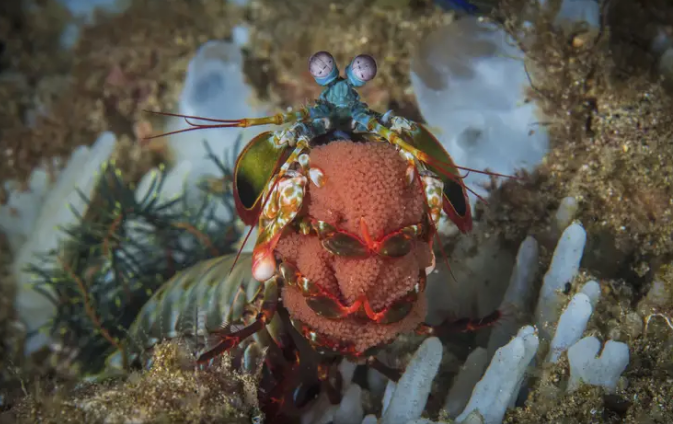

Fatos sobre o Stomatopoda
Descrição
Existem mais de 500 espécies de camarões mantis (Odontodactylus scyllarus) em uma variedade de tamanhos e arco-íris de cores. Como outros crustáceos, o camarão mantis possui uma carapaça ou concha. Suas cores variam do marrom aos tons vívidos do arco-íris. O camarão mantis maduro médio tem cerca de 10 centímetros (3,9 pol.) De comprimento, mas alguns chegam a 38 centímetros (15 pol.). Um foi até documentado com um comprimento de 46 centímetros (18 pol.), seu soco chega a 80 quilômetros por hora, aceleração semelhante a uma arma calibre .22.
| Reino: | Animalia |
| Filo: | Arthropoda |
| Subfilo: | Crustacea |
| Classe: | Malacostraca |
| Subclasse: | Hoplocarida |
| Ordem: | Stomatopoda |

Comportamento
Os camarões louva-a-deus são altamente inteligentes. Eles reconhecem e se lembram de outras pessoas pela visão e pelo olfato, e demonstram habilidade para aprender. Os animais têm um comportamento social complexo, que inclui lutas ritualizadas e atividades coordenadas entre membros de um par monogâmico. Eles usam padrões fluorescentes para sinalizar uns aos outros e possivelmente a outras espécies.

Reprodução e Ciclo de Vida
Em média, um camarão mantis vive20 anos . Durante sua vida, ele pode se reproduzir de 20 a 30 vezes. Em algumas espécies, a única interação entre machos e fêmeas ocorre durante o acasalamento. A fêmea põe ovos em sua toca ou os carrega consigo. Em outras espécies, os camarões acasalam em relações monogâmicas e duradouras, com ambos os sexos cuidando dos ovos. Após a eclosão, a prole passa três meses como zooplâncton antes de mudar para a forma adulta.
Referências Bibliográficas
Planeta Animal ZoneGreenale
Wikipédia
Vídeo
Assista abaixo nosso querido Stomatopoda em ação!